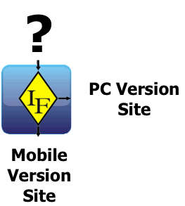
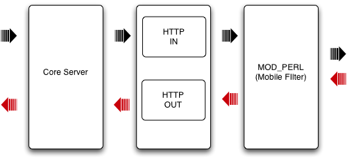
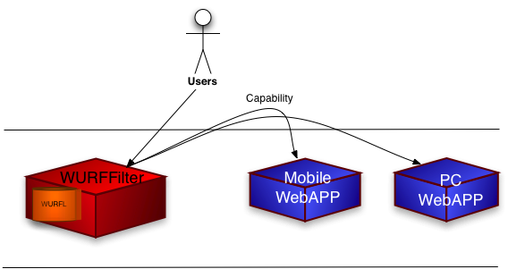

IF Mobile Apache Filter
The scope of this document is to describe my idea about the Mobile Filter Module for Apache, how it's work, how to install and configure.
Before you continue to read this document you must need to reed some information in this order:
The idea is to give to anybody the possibility to create mobile solution, it's not important if you know programming language just what you need to know is a little bit of html and if it's necessary wml.
So I thought it was to make something simply that can identify a browser and redirect it the correct url (for mobile or pc).

If you are a programmer and you want to develop a simple mobile solution you can use this module to pass few Wurfl Capabilities information to your application. In this case it's not important with which technology you want to develop your site and you don't need to implement new methods to how recognise the devices.
Because respect language C is easier and faster to develop, and for me is the best language to manage strings and array.
This is the software and perl modules you need to install before use my Filter.
Apache 2.x.x
mod_perl 2.0
CGI::Cookie
Text::Levenstein
This picture could be help you to describe the entire process of my filter:

You can decide when the filter could be activated, for example, if you want to activated the filter for device then access in particular directory or for a particular extension file. The configuration for the filter must be set into httpd.conf file.
Open the file httpd.conf of your webserver. And configure this few parameter:
PerlSetEnv MOBILE_HOME <Directory Apache Server>/MobileFilter
<Files ~ "\.mobile">
PerlInputFilterHandler MobileFilter::WURFLFilter
</Files>
this configuration is setting if you want to activate the filter only if you call pages with .mobile extension, if you want to activate for particular directory you can use:
Alias /mobile/ "<Directory Apache Server>/mobile/"
<Directory "<yourdirectory>">
PerlInputFilterHandler MobileFilter::WURFLFilter
</Directory>
That's it is all.
The “Mobile Filter” suite have necessary three file in the same directory:
WURFLFilter.pm (the filter application)
WURFLFilterConfig.xml (the filter configuration file)
wurfl.xml (the wurfl file you can download from this url http://wurfl.sourceforge.net/wurfl.zip)
Actualy in this version you can configure the “Mobile Filter” with this two scenario:
The WURFLFilter recognize the device and ridirect to the mobile or no pc version site

<?xml version="1.0" encoding="UTF-8"?>
<WURFLFilter>
<CapabilityList>
<capability>max_image_width</capability>
<capability>max_image_height</capability>
</CapabilityList>
<IntelliSwitch>false</IntelliSwitch>
<MobileVersionUrl>/cgi-bin/perl.html</MobileVersioneUrl>
<FullBrowserUrl>http://www.ilsole24ore.com</FullBrowserUrl>
<CookieSet>false</CookieSet>
<PassQueryStringSet>true</PassQueryStringSet>
<ShowDefaultVariable>false</ShowDefaultVariable>
</WURFLFilter>
For this configuration you need to set this parameter
capability: is the capability value you want to pass to you site
IntelliSwitch (boolean): must be false (the true value is for the second senario)
MobileVersionUrl: is the URL address of mobile version site
FullBrowserUrl: is the URL address of PC version site
CookieSet(boolean): if you want to store the capabilities values into a cookie
PassQueryString(boolean): if you want to pass the capabilities values on Query String
ShowDefaultVariable(boolean): if you want to pass also the default capabilities “device_claims_web_support” and “is_wireless_device”
The WURFLFilter recognize the device and redirect to a particular one or more address URL address that you configure.
<?xml version="1.0" encoding="UTF-8"?>
<WURFLFilter>
<CapabilityList>
<capability>max_image_width</capability>
<capability>max_image_height</capability>
<capability>resolution_width</capability>
<capability>resolution_height</capability>
</CapabilityList>
<IntelliSwitch>false</IntelliSwitch>
<FullBrowserUrl>http://www.ilsole24ore.com</FullBrowserUrl>
<IntelliRiderectUrl>
<IntelliUrl width="128">/128</IntelliUrl>
<IntelliUrl width="176">/176</IntelliUrl>
<IntelliUrl width="208">/208</IntelliUrl>
<IntelliUrl width="240">/240</IntelliUrl>
<IntelliUrl width="320">/320</IntelliUrl>
</IntelliRedirectUrl>
<CookieSet>false</CookieSet>
<PassQueryStringSet>true</PassQueryStringSet>
<ShowDefaultVariable>false</ShowDefaultVariable>
</WURFLFilter>
For this configuration you need to set this parameter
capability: is the capability value you want to pass to you site
IntelliSwitch (boolean): must be true (the false value is for the first senario)
MobileVersionUrl: is the URL address of mobile version site
FullBrowserUrl: is the URL address of PC version site
CookieSet(boolean): if you want to store the capabilities values into a cookie
PassQueryString(boolean): if you want to pass the capabilities values on Query String
ShowDefaultVariable(boolean): if you want to pass also the default capabilities “device_claims_web_support” and “is_wireless_device”
Remember that the capability "resolution_width", "is_wireless_device", "device_claim_web_support" are loaded by default
Warning: don't put more than 5 capability because the value of capability are store into a cookie (if CookieSet is true), and some devices could not have enough memory, the same thing is to pass parmaeter via querystring (if PassQueryString is true)